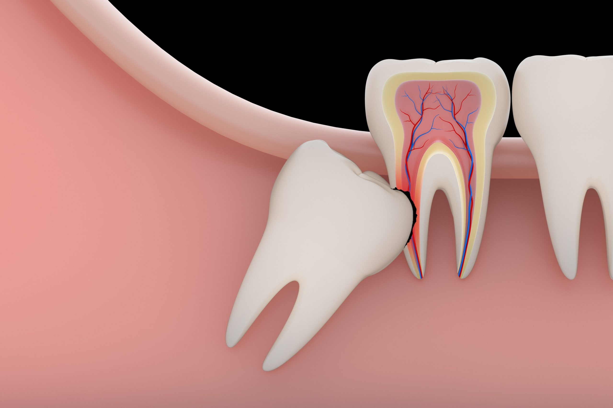

دندان عقل را چه زمانی باید کشید؟

دندان عقل آخرین دندانی است که در دهان رشد میکند و معمولاً بین سنین 17 تا 25 سالگی ظاهر میشود. در بعضی افراد این دندان بدون مشکل رشد میکند، اما در بسیاری از موارد باعث درد، التهاب یا مشکلات دیگر میشود.
چه زمانی باید دندان عقل را کشید؟
کشیدن دندان عقل زمانی توصیه میشود که باعث ایجاد مشکل برای سلامت دهان و دندان شود. مهمترین دلایل کشیدن دندان عقل عبارتاند از:
- درد شدید و مداوم دندان عقل
- دندان عقل نهفته یا نیمه نهفته
- عفونت و التهاب لثه اطراف دندان
- فشار به دندانهای کناری
- پوسیدگی دندان عقل
- ایجاد کیست یا مشکلات استخوانی
دندان عقل نهفته چیست؟
گاهی فضای کافی برای رشد دندان عقل وجود ندارد و دندان نمیتواند به طور کامل از لثه خارج شود. به این حالت دندان عقل نهفته گفته میشود. این نوع دندان ممکن است باعث درد، تورم، عفونت و آسیب به دندانهای مجاور شود.
آیا همه دندانهای عقل باید کشیده شوند؟
خیر. اگر دندان عقل به شکل صحیح رشد کرده باشد، تمیز کردن آن آسان باشد و مشکلی برای دندانهای دیگر ایجاد نکند، ممکن است نیازی به کشیدن آن نباشد.
مراقبتهای بعد از کشیدن دندان عقل
- استراحت کافی در روز اول
- استفاده از کمپرس سرد برای کاهش تورم
- رعایت دستورهای دندانپزشک
- پرهیز از مصرف غذاهای سفت در روزهای اول
- رعایت بهداشت دهان
سوالات متداول
دندان عقل را چه زمانی باید کشید؟
وقتی باعث درد، عفونت، پوسیدگی یا آسیب به دندانهای اطراف شود، کشیدن آن توصیه میشود.
آیا همه افراد باید دندان عقل بکشند؟
خیر. تنها دندانهای عقلی که مشکل ایجاد میکنند نیاز به درمان یا کشیدن دارند.
کشیدن دندان عقل درد دارد؟
با بیحسی موضعی انجام میشود و بیمار هنگام کشیدن درد احساس نمیکند.